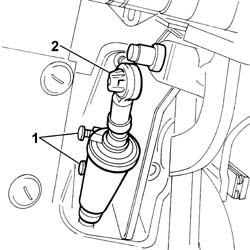
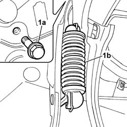
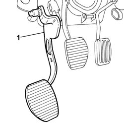

3330B26 CLUTCH PEDAL - R+R
- Path
- Procedures > 33 BRAKES > 3330 HYDRAULIC BRAKE SYSTEM > 3330B PEDAL UNIT > 3330B26 CLUTCH PEDAL - R+R
- Kind
- repair procedure (removal / refitting; the operation number is the code)
- Applies to
- all engines; all production periods
- Interactive page
- https://sloeber94.github.io/elrnDB-fUlss/en/#/179007302
Applies to: all engines; all production periods
 Removing
Removing
 Refitting
RefittingOp. 5530B56 BATTERY DRIP TRAY COVER - R.R.
- Disconnect the negative battery terminal.
Op. 7040A60 UNDER FACIA TRIM - R+R
- Disconnect the diagnostic socket electrical connection.
1. Loosen the bolts fixing the clutch pump to the pedals mounting.
2. Disconnect the pump push rod from the clutch pedal.

Applies to: all engines; all production periods
1. Undo the fixing bolt (1a) and disconnect the return spring from the clutch pedal (1b).

Applies to: all engines; all production periods
1. Remove the clutch pedal.

Applies to: all engines; all production periods
Refitting
Removing- Fit the clutch pedal.
- Fit the spring and tighten the fixing bolt.
- Reposition the clutch pump on the pedals mounting, press fit the push rod to the pedal, then tighten the fixing bolts to torque.
- Connect the diagnostic socket electrical connection.
Op. 7040A60 UNDER FACIA TRIM - R+R
- Connect the negative battery terminal.